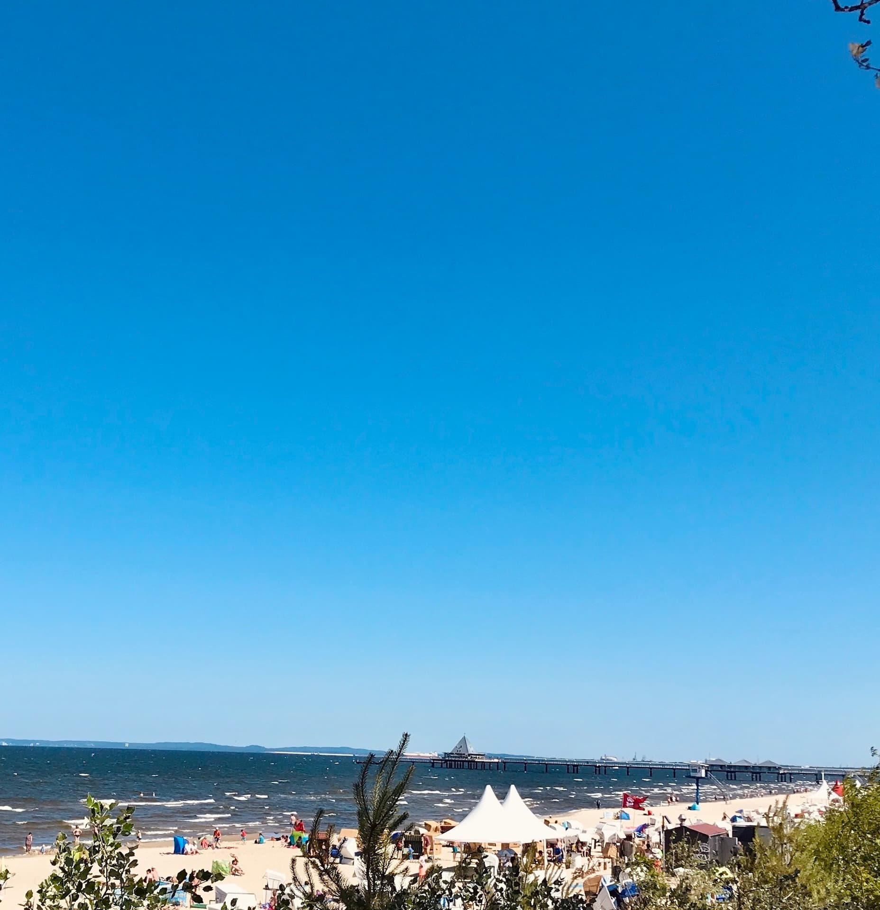

Promenade
Flanieren kann man nicht im Stechschritt, lieben und glauben nicht im Akkord.
Als am Abend ein kühler Wind blies, ging Gott der Herr im Garten umher. (1. Mose 3,8)
Der Alltag peitscht uns an und wir rotieren wie ein Brummkreisel. Brummen so laut, dass Gott sein eigenes Wort nicht mehr versteht.
Gott hingegen flaniert durch seine Schöpfung. Er ist ein Gott, der spazieren geht und vielleicht ist der Glaube an ihn wie Urlaub im Herzen.
Ein Gott der flaniert weiß, dass wir Promenaden und Urlaub im Herzen brauchen, damit wir sein Raunen und Staunen hören – und oft schlendert er wohl unbemerkt mit.


Du kannst jeden Tag als Geschenk aus Gottes Hand nehmen. Ein kleines Gebet hilft dabei:
Danke Gott für diesen Tag,
den ich gern erleben mag.
Behüte mich auf Schritt und Tritt,
geh mit deinem Segen mit.
Amen